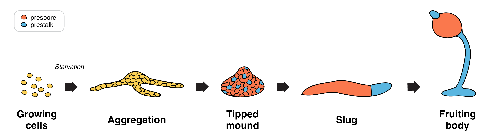

A timed developmental program with matched mutant controls — a clean setup for statistics.
- Starvation triggers a ~20-hour developmental program; sampling at fixed intervals gives temporal snapshots.
- cAMP pulses coordinate aggregation; later cells split into prespore and prestalk fates.
- Two mutants disrupt cAMP signaling — one blocks development entirely, one develops without pulses.
- Matched genetic perturbation gives a mechanistically motivated control group, not just a larger sample.
